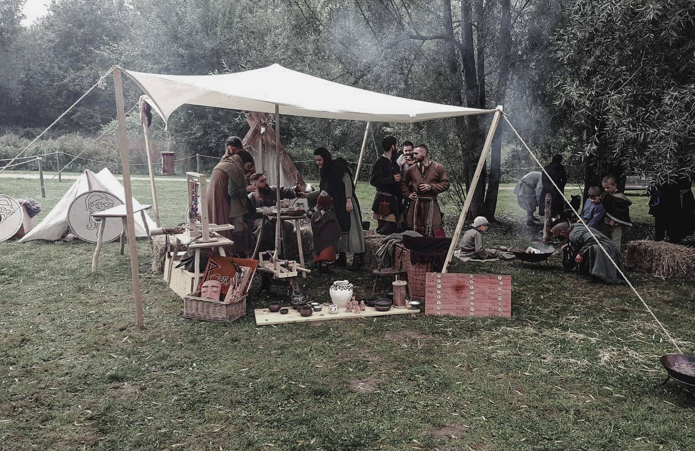

Qui sommes nous ?
Association loi 1901 de reconstitution historique ayant pour cadre le phénomène viking à la fin du Xe siècle. (An 980.)
Une troupe varègue de marchands, guerriers et civils se lance à la rencontre de leur destinée sur les routes de l’Est.
L’origine géographique que nous mettons en scène est située en Suède plus précisément sur l’île de Gotland et ses alentours.
